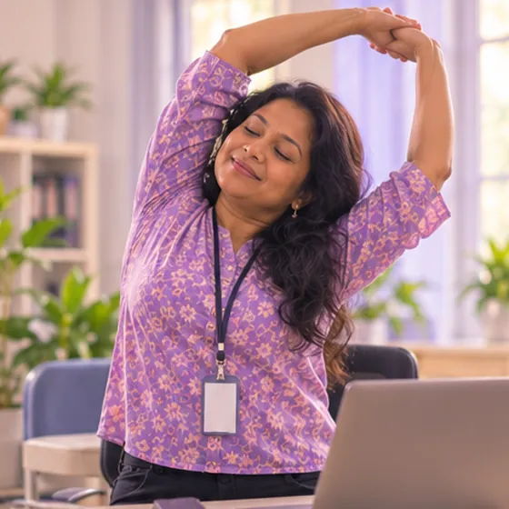

Taji tulang pada tulang belakang leher
Tumbuhan tulang kecil pada tulang leher yang boleh menyempitkan ruang saraf
Apa itu
Apabila meningkat usia, tulang leher boleh menumbuhkan tepi tulang kecil. Ia boleh mengakukan leher dan kadang-kadang menekan saraf, menyebabkan gejala di lengan atau tangan.
- Tulang leher
- Pertengahan umur ke atas
- Leher kaku dan lenguh
- Jumpa doktor
- Doktor keluarga, doktor tulang atau tulang belakang, pakar saraf
- Biasa pada
- Dewasa pertengahan umur dan warga emas; mereka yang bekerja di meja atau ada kecederaan leher lama
- Berjangkit
- Tidak
- Perjalanan
- Taji kekal, tetapi lenguh sering datang dan pergi; doktor boleh membimbing anda
Tanda biasa

Leher kaku dan sengalCervicalgia (sakit leher) 
Sukar memalingkan kepalaPergerakan leher terhad 
Kesemutan di lenganParestesia lengan 
Kesemutan pada tanganParestesia 
Sakit kepala di belakangSakit kepala oksipital
Mengapa ia berlaku

Peningkatan usiaPenuaan 
Kecederaan atau jatuhTrauma
Punca lain
- Postur yang tidak baik bertahun-tahun, seperti menunduk ke telefon atau meja
- Sejarah keluarga; kadang-kadang puncanya tidak jelas
Jumpa doktor dahulu jika
- Muka senget tiba-tiba, lengan lemah atau sukar bercakap: hubungi 999
- Lengan atau tangan lemah atau kebas yang semakin teruk
- Tangan menjadi kekok, sukar berjalan, atau hilang kawalan kencing atau buang air besar
- Sakit leher selepas jatuh atau kemalangan
- Sakit leher dengan demam, atau leher sangat kaku dengan sakit kepala teruk
Jika mana-mana berkenaan, sila jumpa doktor sebelum sesi.
Halaman ini ialah maklumat am. Sila terus mengambil ubat biasa anda dan terus berjumpa doktor.
Teruskan mengambil ubat biasa anda dan terus berjumpa doktor. Sesi kami ialah sokongan lembut dan tidak menggantikan rawatan perubatan.
Menjaga diri

Berehat daripada dudukRehat aktiviti 
Tanya ahli farmasiNasihat ahli farmasi
Lebih banyak cara menjaga diri
- Jaga postur yang baik; angkat telefon dan skrin ke paras mata
- Guna bantal yang mengekalkan leher selari dengan tulang belakang
- Elakkan memulas atau mematahkan leher secara tiba-tiba dan kuat
Beritahu ahli terapi anda
- Kecederaan atau pembedahan leher baru-baru ini
- Lengan kebas atau kesemutan
- Pening apabila memalingkan kepala
- Tulang lemah
- Perentak jantung atau implan logam
- Ubat pencair darah
Ahli terapi anda akan menyemaknya bersama anda sebelum bermula.
Soalan dan jawapan
Apakah Taji tulang pada tulang belakang leher?
Tumbuhan tulang kecil pada tulang leher yang boleh menyempitkan ruang saraf. Apabila meningkat usia, tulang leher boleh menumbuhkan tepi tulang kecil. Ia boleh mengakukan leher dan kadang-kadang menekan saraf, menyebabkan gejala di lengan atau tangan.
Apakah tanda biasa Taji tulang pada tulang belakang leher?
Leher kaku dan sengal · Sukar memalingkan kepala · Kesemutan di lengan · Kesemutan pada tangan · Sakit kepala di belakang
Mengapa Taji tulang pada tulang belakang leher berlaku?
Peningkatan usia · Kecederaan atau jatuh
Bagaimana menjaga diri dengan Taji tulang pada tulang belakang leher?
Berehat daripada duduk · Tanya ahli farmasi
Bolehkah sesi AI Body Master membantu Taji tulang pada tulang belakang leher?
Sesi ialah sokongan meridian tanpa jarum yang lembut untuk kesejahteraan anda. Ia tidak merawat atau menyembuhkan Taji tulang pada tulang belakang leher dan tidak menggantikan ubat atau doktor anda. Beritahu ahli terapi anda sebelum sesi bermula.
Keadaan berkaitan
Rujukan: General information based on public health sources such as Mayo Clinic, NHS, Cleveland Clinic and NCBI StatPearls.
Halaman dikemas kini: 2026-11-04